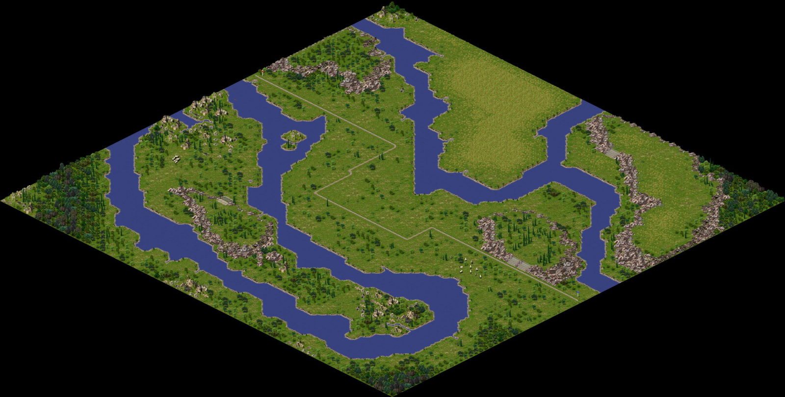

Tarraco
Famine in the Empire.
Overview
- Level: 4 (peaceful)
- Rank: Architect (salary: 8 Dn)
- Climate: central
- Map size: medium
- Starting Date: January 270 BC
- Enemy: none
Starting and Rescue Funds
| Dn | VE | E | N | H | VH
|
|---|
| Starting | 24000 | 16000 | 12000 | 8000 | 6000
|
|---|
| Rescue | 18000 | 12000 | 9000 | 6000 | 4500
|
|---|
Assignment Goals
| Pop | Cult | Prosp | Peace | Favor
|
|---|
| 2500 | 45 | 25 | 30 | 70
|
Local Resources
Trade Partners
| City | Route | Cost | Sells | Buys
|
|---|
| Capua |  | 350 Dn
| 
|  
|
| Tarentum | | 650 Dn
| 
|  
|
Structures Disabled
- Entertainment: Hippodrome, Chariot Maker
- Security: Military structures
Random Events
Invasions
Events
| Date | Type | Size | Time | Favor
|
|---|
| Apr 269 BC | request | 10 | 24 months | Favor +8
|
| Jun 268 BC | disaster | Major earthquake!
|
| Sep 267 BC | request | 10 | 24 months | Favor +8
|
| Mar 265 BC | request | 15 | 24 months | Favor +10
|
| Aug 265 BC | price + | +20 Dn
|
| May 263 BC | request | 15 | 24 months | Favor +10
|
| Jul 262 BC | price + | +20 Dn
|
| Sep 261 BC | request | 15 | 24 months | Favor +10
|
| Mar 259 BC | request | 20 | 24 months | Favor +10
|
| May 257 BC | request | 15 | 24 months | Favor +10
|
| May 255 BC | price + | +20 Dn
|
| Jun 255 BC | request | 15 | 24 months | Favor +10
|
| Mar 250 BC | price - | -15 Dn
|
| Sep 250 BC | request | 15 | 24 months | Favor +10
|
| Sep 245 BC | request | 15 | 24 months | Favor +10
|
Navigation
Previous Assignment: (Capua, peaceful) or (Tarentum, military) • Back to Campaign • Next Assignment: (Miletus, peaceful) or (Mediolanum, military)
Current Assignment: (Tarraco, peaceful) • (Syracusae, military)
Map
